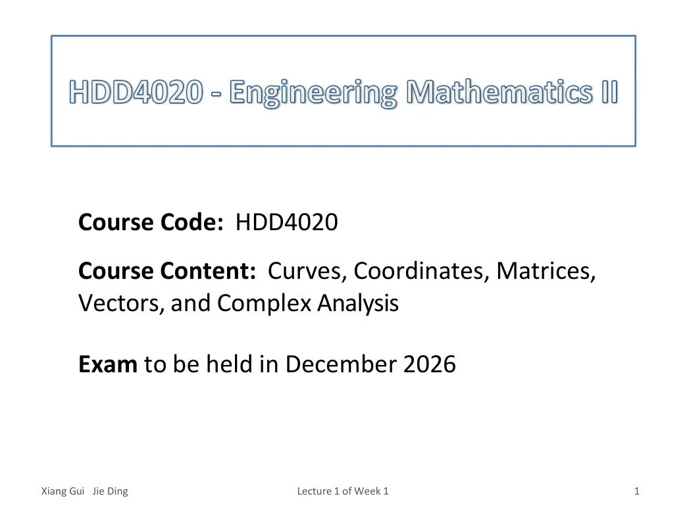
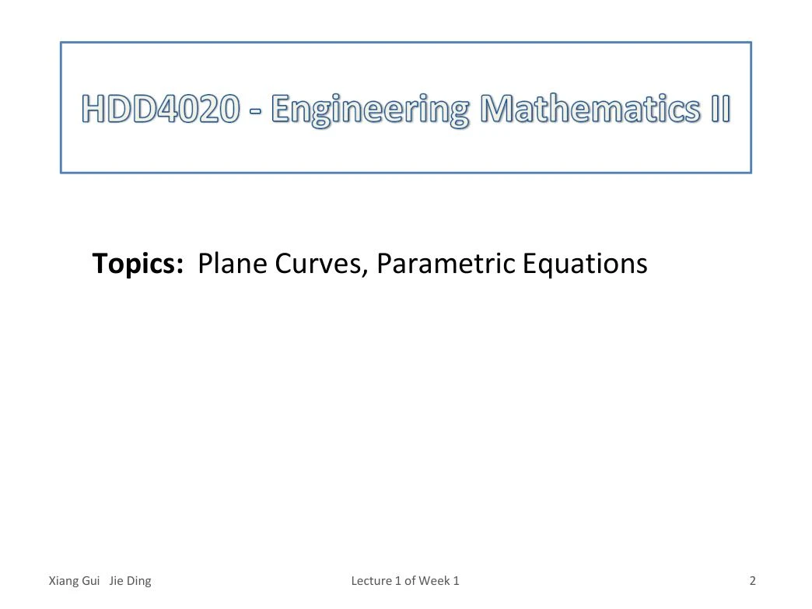
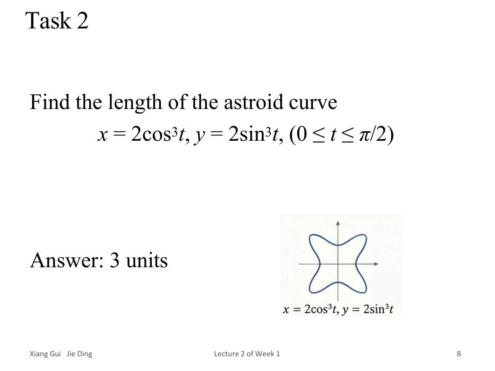
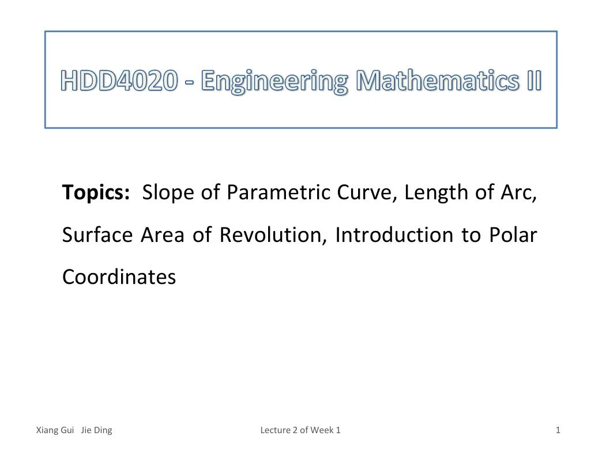

HDD4020 工程数学 II · 第 01 / 08 讲
第 1 章 · 平面曲线与参数方程
Plane Curves and Parametric Equations
所属章节：第 1 章 参数曲线与极坐标
资料来源 · 2 项 / 已附 0 项
Topic 1/EMII_Week1_Lecture1.pdf未附原文件Topic 1/EMII_Week1_Lecture2.pdf未附原文件
未附文件仅列原始名称；版本与核对日期由维护者登记。
本节在整门课中的位置
HDD4020 的第一条主线是「用参数描述几何对象」。本节先解决一个很具体的问题：像圆这样的曲线，写不成一个函数 y = f(x)，怎么办？答案是再引入一个自变量 t，让 x 与 y 都成为 t 的函数。这个换元一旦成立，后面所有的求导、求切线、求弧长、求曲面面积，都变成「对 t 求导、对 t 积分」，而极坐标、柱坐标、球坐标本质上是同一个思想的推广——用角度与距离代替横纵坐标。
学完本节你应当能够：
- 判断一组式子是否构成某条平面曲线的参数化，并能说明「参数化不唯一」的含义
- 在参数方程与直角坐标方程之间互相转换，包括区间限制带来的取值范围变化
- 判断曲线的端点、是否闭合、是否简单闭合、是否自交
- 用
dy/dx = g′(t)/f′(t)求参数曲线的斜率，并识别竖直切线与奇点 - 写出参数曲线在指定点的切线方程与法线方程（参数式与直角坐标式两种写法）
- 由斜率条件反解出水平切线与竖直切线对应的参数值
本节与下一讲的衔接：本节只处理「曲线的形状与切线」，下一讲用同一套导数去算弧长与旋转曲面面积，并把坐标系从直角换成极坐标。因此本节的导数基本功直接决定下一讲的积分能否顺利化简。
1.1 一个方程写不出的曲线
半径为 1、圆心在原点的单位圆，方程是 x² + y² = 1。这个方程是隐式的：它没有直接告诉你 y 等于什么。硬要解出来，只能写成两支：
y = +√(1 − x²) 与 y = −√(1 − x²)（−1 ≤ x ≤ 1）。
也就是说，一条圆必须用两个函数才能描述完：上半圆一个，下半圆一个。这在工程上非常别扭——画图要画两次，求导要分两段，接缝处（x = ±1）导数还是无穷大。更根本的问题是：圆是「绕回来」的曲线，而函数 y = f(x) 的定义要求每个 x 只对应一个 y，这个要求在几何上就直接把圆排除掉了。
解决办法是换一个自变量。令 x 与 y 都依赖于同一个新变量 t：
x = f(t) = cos t，y = g(t) = sin t，0 ≤ t ≤ 2π
因为 cos²t + sin²t = 1，所以无论 t 取何值，点 (x, y) 始终落在单位圆上；反过来，圆上每一点都对应某个 t。t 在这里可以理解为「从 (1, 0) 出发逆时针走过的圆心角」。这一组式子就叫单位圆的参数方程（parametric equations），t 叫参数（parameter）。
1.2 平面曲线的正式定义
课件给出的定义是：平面曲线（plane curve）是平面上满足 x = f(t)、y = g(t)（t 取遍区间 I）的点 (x, y) 的集合 C，其中 f、g 是定义在 I 上的连续函数。任何能生成 C 的区间 I 与函数对 (f, g)，都叫作 C 的一个参数化（parametrization）。
这个定义里有三个必须记住的词：
- 集合 C 是几何对象：它是平面上的一串点，与用什么参数无关。
- (f, g) 与 I 是描述方式：同一串点可以用完全不同的函数对生成。
- 连续是唯一的要求：曲线可以有任何尖角、自交、折返，只要点连着走。
因此「参数方程」与「曲线」不是一回事：曲线是点集，参数方程是走法。理解这一点，才不会在后面的消参、弧长、面积里把「走法」当成「形状」而算错。
1.3 同一条曲线有无穷多种参数化
课件强调：单位圆的参数化有无穷多个。它给了四个例子（其中第三、四例在 PDF 抽取时符号丢失，这里按可验证的形式复原，并给出校验）：
| 编号 | 参数方程 | 参数范围 | 走法 |
|---|---|---|---|
| 1 | x = cos t, y = sin t | 0 ≤ t ≤ 2π | 匀速逆时针一圈 |
| 2 | x = cos t², y = sin t² | 0 ≤ t ≤ √(2π) | 先慢后快，t = 0 出发逆时针一圈 |
| 3 | x = cos(t + 1), y = sin(t + 1) | −1 ≤ t ≤ 2π − 1 | 从角度 1 处出发逆时针一圈 |
| 4 | x = 1 − t², y = t√(2 − t²) | −√2 ≤ t ≤ √2 | 从 (−1, 0) 经下半圆绕到 (−1, 0)，是闭曲线 |
第 4 个例子值得单独验一遍，因为它同时用到了平方和与取值范围两件事：
x² + y² = (1 − t²)² + t²(2 − t²) = 1 − 2t² + t⁴ + 2t² − t⁴ = 1
所以点始终在单位圆上。再看取值：t = −√2 → (−1, 0)；t = −1 → (0, −1)；t = 0 → (1, 0)；t = 1 → (0, 1)；t = √2 → (−1, 0)。五个点依次落在左、下、右、上、左，说明它沿圆走了一整圈，起点与终点重合，是闭曲线。
同一个点集可以有不同的走法：可以顺时针、可以来回、可以在同一点停留。参数化改变的是「什么时候走到哪里」，不改变点集本身。这一点在算弧长时至关重要：如果一条曲线被重复走了两遍，弧长积分会如实算成两倍。
1.4 端点、闭曲线与简单闭曲线
设参数区间 I = [a, b]，曲线的起点是 P(a)，终点是 P(b)。
- 若
P(a) ≠ P(b)，则 P(a) 与 P(b) 称为曲线的端点（endpoints）。 - 若
P(a) = P(b)，则曲线称为闭曲线（closed curve）。 - 既闭合又不自交的曲线称为简单闭曲线（simple closed curve）。
- 自交（self-intersecting）指曲线上存在
t₁ ≠ t₂但P(t₁) = P(t₂)的情形。
判定的顺序很重要，先判闭合，再判是否自交。单位圆 x = cos t, y = sin t（0 ≤ t ≤ 2π）满足 P(0) = P(2π) = (1, 0)，且除端点外不重复经过任何点，所以是简单闭曲线；而第 4 个例子中 t = −√2 与 t = √2 给出同一点，只要区间再放大就会出现自交，那时就只是闭曲线而不是简单闭曲线。
端点与闭合性的判定直接影响后面两类计算：算弧长时要知道积分区间是否正好走一遍；算极坐标面积时要知道曲线是否「恰好描出一次」，否则面积会被算成两倍（心形线就是典型）。
1.5 消参：从参数方程回到直角坐标
给定 x = f(t), y = g(t)，求对应的直角坐标方程，通用流程是：
- 观察两个式子，看能否直接解出 t（例如 x = t + 1 立刻得 t = x − 1）
- 若解不出 t，就找两个式子之间的代数关系（相加、相减、平方和、比值）
- 把关系式写成只含 x、y 的方程，化简成标准形式
- 把参数区间的端点代入，确定轨迹在曲线上的哪一段
- 回到原式代一组中间值核对，确认走向与范围无误
课件里的第一个任务是作图：x = t + 1, y = t² − 1，−2 ≤ t ≤ 2。由第一式得 t = x − 1，代入第二式：
y = (x − 1)² − 1
这是一条开口向上的抛物线，顶点在 (1, −1)。端点由 t 的取值给出：t = −2 → (−1, 3)；t = 2 → (3, 3)。所以画出来的不是整条抛物线，而是从 (−1, 3) 到 (3, 3) 的那一段弧——顶点恰好在段内。
课件的第二个例子更值得注意：x = 2t² − 2, y = 2t²，−∞ < t < ∞。由第一式得 2t² = x + 2，代入第二式得：
y = x + 2
课件据此说这是一条斜率为 1、x 轴截距 (−2, 0)、y 轴截距 (0, 2) 的直线。但这里有一个必须补上的细节：由于 t² ≥ 0，所以 x = 2t² − 2 ≥ −2。也就是说，轨迹并不是整条直线，而是从 (−2, 0) 出发沿 y = x + 2 向右上方延伸的射线。
1.6 参数方程的作图流程
考试里的作图题不要求精确描点，但要求「形状对、方向对、端点对」。按下面的顺序做，基本不会丢分：
- 先消参，判断是直线、抛物线、圆、椭圆、双曲线中的哪一类
- 由参数的取值范围，确定轨迹是该曲线的哪一段（端点坐标写出来）
- 列一张小表：取 4–5 个有代表性的 t（含端点、含 0、含极值点），算出 (x, y)
- 按 t 递增的顺序连线，在图上画出箭头表示走向
- 标出端点、与坐标轴的交点、自交点；若 P(a) = P(b) 则注明「闭曲线」
1.7 椭圆：用参数方程描述质点的运动
课件用一个物理场景说明参数方程的用处：质点在时刻 t 的位置为
x = a cos t，y = b sin t，0 ≤ t ≤ 2π（a, b > 0）
验证它落在椭圆上：(x/a)² + (y/b)² = cos²t + sin²t = 1，即 x²/a² + y²/b² = 1。再看几个关键位置：
| t | 0 | π/2 | π | 3π/2 | 2π |
|---|---|---|---|---|---|
| x | a | 0 | −a | 0 | a |
| y | 0 | b | 0 | −b | 0 |
结论：质点沿椭圆逆时针运动，从 (a, 0) 出发，依次经过 (0, b)、(−a, 0)、(0, −b)，绕行一圈后回到 (a, 0)。
这里有一个容易忽略的对比：同一条椭圆若写成 x = a sin t, y = b cos t，形状完全一样，但起点变成 (0, b)，走向也不相同。这说明「参数方程」携带了「运动信息」，而直角坐标方程只携带「形状信息」。考题常借这一点问「何时到达某点」「转向如何」。
1.8 摆线的推导
半径为 a 的轮子沿水平直线无滑动地向右滚动，轮缘上固定一点 P 的轨迹称为摆线（cycloid）。课件给出了完整的几何推导，这一步是本章最典型的「建模 + 参数化」训练。
建系：取轮子滚动所沿的直线为 x 轴，把 P 的初始位置放在原点，令轮子向右滚。设轮子滚过的角度为 t（单位弧度）。
- 无滑动意味着轮缘滚过的弧长等于轮心前进的距离，即轮心横坐标为
at，轮心在(at, a) - 此时轮子与 x 轴相切于 T，且
PT = at（沿 x 轴量） - P 相对轮心的位置由半径 a 与转角决定：半径 OP 与竖直向下方向的夹角为 t，于是 P 相对轮心的偏移为
(−a sin t, −a cos t) - 把轮心坐标与偏移相加：
x = at − a sin t，y = a − a cos t
课件把第二式写成 y = a + a cos(π − t)，利用 cos(π − t) = −cos t 化简成 a − a cos t，两种写法等价。最终结果：
x = a(t − sin t)，y = a(1 − cos t)，t ∈ ℝ
这个结果值得记住三个特征：t = 0 时 P 在原点；t = π 时 P 在最高点 (aπ, 2a)；t = 2π 时 P 回到 x 轴上的 (2πa, 0)，此时轮子正好转了一整圈、前进了一个周长。因此一个「拱」对应 t ∈ [0, 2π]，拱高为 2a，拱宽为 2πa。
摆线的意义不只是几何趣题：它是「无滑动滚动」这一约束的数学表达，齿轮啮合、车轮轨迹、旋轮线齿轮的设计都要用到它。后面算它的弧长会得到一个非常整齐的结果（一拱弧长 8a），这是它的一个著名性质。
1.9 参数曲线的斜率与光滑性
先明确两个概念。参数曲线 x = f(t), y = g(t) 称为可微（differentiable），如果 f 与 g 都可微；称为光滑（smooth），如果 f′ 与 g′ 都连续，且不同时为零。
在 f′(t) ≠ 0 时，由链式法则 dy/dt = (dy/dx)(dx/dt)，两边同除 dx/dt：
dy/dx = (dy/dt)/(dx/dt) = g′(t)/f′(t)
对称地，若 g′(t) ≠ 0，则 dx/dy = f′(t)/g′(t)。这两条式子说明：参数曲线的斜率就是两个导数的商，不需要先消参再求导，这在实际计算中省了大量代数工作。
x = t³ + 1, y = t⁶ − 1 在 t = 0 处两个导数都为 0，按定义在该点不满足「不同时为零」，但它实际对应一条光滑抛物线（见 1.9 第二个例题）。考试若问「是否光滑」，要按定义回答并说明理由，不要凭图形直觉。例 A（课件 Example 1）。曲线 x = t − sin t, y = 1 − cos t，求斜率。
f′(t) = 1 − cos t，g′(t) = sin t，于是
dy/dx = sin t / (1 − cos t)
除 t = 2kπ（k = 0, ±1, ±2, …）外，曲线处处光滑；在那些点上 f′ 与 g′ 同时为 0，公式失效，需要单独讨论。
取 t = π/2：斜率 m = sin(π/2)/(1 − cos(π/2)) = 1/1 = 1；对应点为 (π/2 − 1, 1)。用点斜式：
y − 1 = 1·(x − (π/2 − 1))，即 y = x + (2 − π/2) ≈ x + 0.43
例 B（课件 Example 2）。曲线 x = t³ + 1, y = t⁶ − 1。
dx/dt = 3t²，dy/dt = 6t⁵，所以 dy/dx = 6t⁵/(3t²) = 2t³（t ≠ 0）。
而由 t³ = x − 1 得 t⁶ = (x − 1)²，故 y = (x − 1)² − 1，这是一条抛物线，处处光滑。虽然 t = 0 处两个导数同时为 0，但曲线本身没有尖点——这说明「f′ = g′ = 0」只是公式失效的信号，不必然意味着几何上的奇点。
1.10 切线方程与法线方程
设参数曲线 x = f(t), y = g(t) 在 P₀(f(t₀), g(t₀)) 处 f′、g′ 连续且不同时为零，则该点的切线方向向量是 (f′(t₀), g′(t₀))，法线方向向量与之垂直，取 (g′(t₀), −f′(t₀))。于是：
切线（参数式）：x = f(t₀) + f′(t₀)·s，y = g(t₀) + g′(t₀)·s
法线（参数式）：x = f(t₀) + g′(t₀)·s，y = g(t₀) − f′(t₀)·s
这里我把直线的自变量写成 s，而不是课件里的 t，是为了避免与曲线自身的参数 t 混淆——这是本节最容易写错的地方。若要用直角坐标式，只需把两者相除得斜率，再套点斜式。
例 C（课件 Task，Lecture 2 第 3 页）。求 x = t² − t, y = t² + t 在 t = 2 处的切线、法线。
f′ = 2t − 1，g′ = 2t + 1；t = 2 时 f(2) = 2，g(2) = 6，f′ = 3，g′ = 5。点在 (2, 6)。
切线：x = 2 + 3s，y = 6 + 5s；消去 s 得 y = (5/3)x + 8/3，与课件的参数式答案一致。
用法线的方向 (5, −3)：x = 2 + 5s，y = 6 − 3s，消去 s 得 y = −(3/5)x + 36/5。课件答案写作 x = 5t − 8, y = −3t + 12，只是把新参数平移了一下（令 s = T − 2），几何上是同一条直线。
1.11 水平切线、竖直切线与奇点
由 dy/dx = g′/f′ 可以立刻读出三种特殊情形：
g′(t₀) = 0且f′(t₀) ≠ 0：斜率 0，水平切线。f′(t₀) = 0且g′(t₀) ≠ 0：斜率不存在，竖直切线。f′(t₀) = g′(t₀) = 0：公式失效，可能是尖点、也可能只是参数化的瞬时停顿，必须回到极限lim g′/f′判断。
例 D（课件 Task 1a）。曲线 x = t³ − 3t, y = 9t²。（1）求 t = 2 处的切线与法线；（2）问 t 取何值时切线水平或竖直。
先求导：dx/dt = 3t² − 3 = 3(t² − 1)，dy/dt = 18t，于是
dy/dx = 18t/[3(t² − 1)] = 6t/(t² − 1)（t ≠ ±1）。
t = 2 时：x = 8 − 6 = 2，y = 36，斜率 = 12/3 = 4。切线 y − 36 = 4(x − 2)，即 y = 4x + 28；法线斜率 −1/4，y − 36 = −(1/4)(x − 2)，即 y = −0.25x + 36.5。
水平切线：dy/dt = 0 且 dx/dt ≠ 0，得 t = 0（此时 x = 0，y = 0，切线为 y = 0）。
竖直切线：dx/dt = 0 且 dy/dt ≠ 0，得 t = ±1（此时 dy/dt = ±18，切线竖直）。这两组答案与课件给出的「0；±1」完全一致。
1.12 常见误解
- 把参数方程的斜率当成 g′/f′ 的倒数。除以谁要看对谁求导：
dy/dx是 g′ 除 f′，dx/dy才是 f′ 除 g′。 - 切线方程里的参数与原参数混用。切线是一条新的直线，用 s 或 T 表示更清楚；写成同一个 t 会让阅卷老师无法判断你在代哪个值。
- 看到 f′ = g′ = 0 就宣布「尖点」。如 1.9 例 B，那可能只是参数化的瞬时停顿。判据是极限是否存在，而不是导数是否为零。
- 消参后忘了取值范围。
y = x + 2配x = 2t² − 2是射线不是直线；y = (x − 1)² − 1配 −2 ≤ t ≤ 2 是抛物线段不是整条抛物线。 - 把「闭曲线」等同于「简单闭曲线」。判定还要求不自交；8 字形曲线闭合但自交。
- 弧长积分时没检查是否只走一遍。若参数化把曲线走了两遍，积分会给出两倍长度，这不是公式错，是区间选错。
原版图页（源 PDF 插图页）





| English | 中文 | 说明 / 例句 |
|---|---|---|
| plane curve | 平面曲线 | A set C of points (x, y) with x = f(t), y = g(t), f and g continuous on an interval I. |
| parametrization | 参数化 | Any pair (f, g) with interval I that generates the points of C. |
| parameter | 参数 | The independent variable t that drives both coordinates; often read as time. |
| eliminate the parameter | 消参 | Remove t to obtain a Cartesian equation of the curve. |
| endpoints | 端点 | P(a) and P(b) of a curve parametrized on [a, b], provided P(a) is not P(b). |
| closed curve | 闭曲线 | A curve with P(a) = P(b). |
| simple closed curve | 简单闭曲线 | A closed curve that does not intersect itself. |
| self-intersecting | 自交的 | Two different parameter values give the same point. |
| cycloid | 摆线 | The path of a point on the rim of a wheel rolling without slipping: x = a(t − sin t), y = a(1 − cos t). |
| smooth curve | 光滑曲线 | f′ and g′ are continuous and never both zero. |
| slope of a parametric curve | 参数曲线斜率 | dy/dx = g′(t)/f′(t), valid when f′(t) is not zero. |
| vertical tangent | 竖直切线 | Occurs where f′(t) = 0 but g′(t) is not zero. |
| horizontal tangent | 水平切线 | Occurs where g′(t) = 0 but f′(t) is not zero. |
| tangent line | 切线 | x = f(t₀) + f′(t₀)s, y = g(t₀) + g′(t₀)s. |
| normal line | 法线 | x = f(t₀) + g′(t₀)s, y = g(t₀) − f′(t₀)s. |
| sense of movement | 走向 | Different parametrizations of the same curve may traverse it in different directions. |
x = 2cos t, y = 3sin t（0 ≤ t ≤ 2π）化成直角坐标方程，并说明质点的运动。第一步，消参。由 cos t = x/2、sin t = y/3，用 cos²t + sin²t = 1：
(x/2)² + (y/3)² = 1，即 x²/4 + y²/9 = 1，是长半轴 3、短半轴 2 的椭圆。
第二步，看范围。t 取遍 [0, 2π]，cos t、sin t 各自取遍 [−1, 1]，所以 x 取遍 [−2, 2]、y 取遍 [−3, 3]，整条椭圆都被覆盖，无缺段。
第三步，看走向。t = 0 → (2, 0)；t = π/2 → (0, 3)；t = π → (−2, 0)；t = 3π/2 → (0, −3)；t = 2π → (2, 0)。依次扫描四个顶点，说明质点从 (2, 0) 出发逆时针绕行一圈回到原处，且在 t 增大时不断前进，中途没有折返。
x = t³ + 1, y = t⁶ − 1 化为直角坐标方程，并求 t = 2 处的切线斜率。消参。由第一式得 t³ = x − 1，两边平方得 t⁶ = (x − 1)²，代入第二式：
y = (x − 1)² − 1，顶点 (1, −1) 的抛物线。
求斜率（方法一：用参数式）。dx/dt = 3t²，dy/dt = 6t⁵，故 dy/dx = 2t³。
求斜率（方法二：用直角坐标式）。dy/dx = 2(x − 1)，而 x − 1 = t³，同样得 2t³。两种方法必须一致，这本身就是一个验算手段。
t = 2 时斜率 = 16，对应点 x = 9, y = 63。切线：y − 63 = 16(x − 9)，即 y = 16x − 81。
点评。本题在 t = 0 处两个导数都为 0，但抛物线在该点 (x = 1, y = −1) 的切线是水平的（由方法二 dy/dx = 2(x − 1) = 0），并不是奇点。这正是「导数同时为零 ≠ 尖点」的例证。
x = t − sin t, y = 1 − cos t 在 t = π/3 处的切线方程。求导。dx/dt = 1 − cos t，dy/dt = sin t，故 dy/dx = sin t/(1 − cos t)。
代值。t = π/3：x = π/3 − √3/2，y = 1 − 1/2 = 1/2；
斜率 m = (√3/2)/(1 − 1/2) = √3。
写方程。y − 1/2 = √3(x − π/3 + √3/2)，展开得
y = √3·x + 2 − √3π/3（数值上约为 y = 1.732x + 0.186）。
检验。用万能公式 sin t/(1 − cos t) = cot(t/2)，t = π/3 时 cot(π/6) = √3，与上面一致。这条捷径在摆线上非常好用。
x = t³ − 3t, y = 9t²，求 t = 2 处的切线、法线，并求水平、竖直切线对应的 t。求导。dx/dt = 3(t² − 1)，dy/dt = 18t，dy/dx = 6t/(t² − 1)。
t = 2 处。点为 (2, 36)，斜率 12/3 = 4。切线 y = 4x + 28；法线斜率 −1/4，y = −0.25x + 36.5。
水平切线。令 dy/dt = 0 得 t = 0；此时 dx/dt = −3 ≠ 0，斜率确为 0，点为 (0, 0)。
竖直切线。令 dx/dt = 0 得 t = ±1；此时 dy/dt = ±18 ≠ 0，两点分别为 t = 1 → (−2, 9)、t = −1 → (2, 9)，切线均为竖直线。
检验。把曲线改写成 y = 9(t²) 而 t² = (x + 3t)/… 不易消参，但可以数值核对：t = 1.1 附近 x 从 −2 略增大而 y 增大，说明该处曲线走向竖直，与「竖直切线」吻合。
- 判断
x = cos 2t, y = sin 2t（0 ≤ t ≤ π）是否为单位圆的参数化，并说明它是否简单闭曲线。 - 把
x = t², y = t⁴ − 2（−∞ < t < ∞）化为直角坐标方程，并指出轨迹是整条曲线还是其中一段。 - 求
x = e^t cos t, y = e^t sin t在t = π/4处的切线斜率。 - 曲线
x = t² − 2t, y = t³ − 3t在哪些 t 处有水平切线？在哪些 t 处有竖直切线？ - 摆线
x = a(t − sin t), y = a(1 − cos t)在 t = π 处的切线是什么？
参考答案与思路
1. 因为 cos²2t + sin²2t = 1，点都在单位圆上；t 从 0 到 π 时 2t 从 0 到 2π，走过一整圈，起点与终点都是 (1, 0)，是闭曲线；除端点外不重复，故是简单闭曲线。注意它比 x = cos t 快一倍。
2. 由 t² = x 得 t⁴ = x²，故 y = x² − 2，抛物线，顶点 (0, −2)。又 t² ≥ 0 即 x ≥ 0，所以轨迹只是抛物线的右半支（含顶点）。
3. x′ = e^t(cos t − sin t)，y′ = e^t(sin t + cos t)，故 dy/dx = (sin t + cos t)/(cos t − sin t)。t = π/4 时分子 √2、分母 0，斜率不存在，切线竖直；该点为 (√2/2·e^{π/4}, √2/2·e^{π/4})，位于射线 y = x 上。
4. dx/dt = 2t − 2，dy/dt = 3t² − 3 = 3(t − 1)(t + 1)。水平：dy/dt = 0 且 dx/dt ≠ 0，得 t = 1、t = −1（t = 1 时 dx/dt = 0，需另判，实际 t = 1 处两个导数同时为 0，是奇点，不能算水平切线）。竖直：dx/dt = 0 即 t = 1，此时 dy/dt = 0，同样是奇点。结论：只有 t = −1 是真正的水平切线点，t = 1 处须单独讨论。
5. x′ = a(1 − cos t)，y′ = a sin t。t = π 时 x′ = 2a，y′ = 0，斜率 0，切线水平，切点为 (aπ, 2a)（拱顶）。
dy/dx = g′/f′ 与切线、法线方程是每次考试都会出现的基本题；消参后作图并指出端点、闭曲线性质是常见的概念题。摆线的参数方程要能默写。dy/dx 时把 g′/f′ 写成 f′/g′，后续切线斜率全部错位。判断口诀：分子是 y 的导数，分母是 x 的导数。dx/dt = 0 就写「斜率 0」是错的，那是竖直切线；只有 dy/dt = 0 才是水平切线。两者同时为 0 时必须回极限判断。|sin t| ≤ 1 等限制，导致轨迹被夸大。sin t/(1 − cos t) 的斜率，可用半角公式化成 cot(t/2)；涉及摆线弧长可用 1 − cos t = 2sin²(t/2)。这类化简能把根号内的式子变成完全平方，是后面算弧长的关键技巧。方法与检查清单
拿到一组参数方程，按这个顺序做
- 写下
x = f(t)、y = g(t)与参数区间 I - 先看能否直接解出 t；不能就找平方和、比值、相加相减的关系
- 消参得直角坐标方程，并用 t 的取值范围把轨迹截成对应的段
- 取 4–5 个 t 值列表算点，确认走向、端点、是否自交
- 若要求切线：先算
f′、g′，判断该点是否f′ ≠ 0 - 斜率用
g′/f′；f′ = 0时写「竖直」，g′ = 0时写「水平」，两者同零时回极限 - 切线用法线方向
(g′, −f′)，参数式里换一个字母 s，最后按需化成直角坐标式
交卷前自查
- 斜率分子分母顺序是否正确
- 切线方程代的是 t₀ 处的点，不是变量 t
- 消参后是否写了定义域限制
- 闭曲线判定是否同时检查了「闭合」与「不自交」
- 答案是否用全角中文标点书写，公式是否用
包住
| 源文件 | 页码 / 位置 | 覆盖的知识点 |
|---|---|---|
| Topic 1/EMII_Week1_Lecture1.pdf | p3–p5 | 单位圆的方程、两支函数表示、参数方程的引入 |
| Topic 1/EMII_Week1_Lecture1.pdf | p6 | 平面曲线的正式定义与参数化的定义 |
| Topic 1/EMII_Week1_Lecture1.pdf | p7–p8 | 四种参数化、走法的差异、x = 1 − t² 与 y = t√(2 − t²) 的校验表 |
| Topic 1/EMII_Week1_Lecture1.pdf | p9–p10 | 端点、自交、闭曲线、简单闭曲线 |
| Topic 1/EMII_Week1_Lecture1.pdf | p11–p13 | 作图任务 x = t + 1, y = t² − 1；例 x = 2t² − 2, y = 2t² 消参得 y = x + 2 |
| Topic 1/EMII_Week1_Lecture1.pdf | p14–p16 | 椭圆的参数方程、运动描述与关键点表 |
| Topic 1/EMII_Week1_Lecture1.pdf | p17–p19 | 摆线的几何推导 |
| Topic 1/EMII_Week1_Lecture1.pdf | p20–p25 | 可微与光滑、dy/dx = g′/f′、Example 1 与 Example 2、Task 1a |
| Topic 1/EMII_Week1_Lecture2.pdf | p2–p3 | 切线、法线的参数式与 Task（x = t² − t, y = t² + t） |
| （跳过）_info_*.html.txt | 全篇 | Moodle 快照：登录页、公告、问卷、四个 Quiz 的入口页，无讲义内容，不纳入 |
| （跳过）Topic 1/Lecture 2.html | 全篇 | 抽取结果是 Moodle 登录页（Log in to the site），无正文，跳过 |
| （跳过）General/General Course Information (2).html | 全篇 | 与 General Course Information 同页的截断副本，内容重复且更短，跳过 |
| （拓展） | — | 1.5 中「射线而非直线」的取值范围说明、1.9 例 B 关于「导数同零不等于尖点」的讨论，均为对课件结论的必要补正，不引入新考点 |